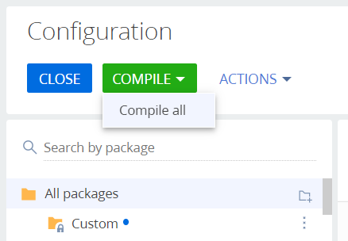
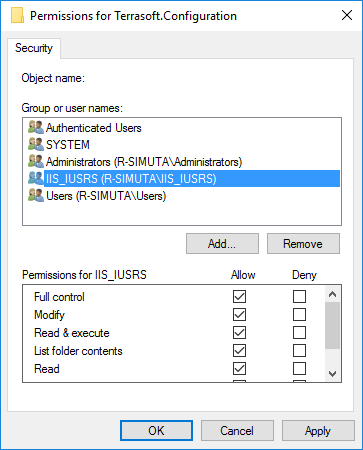
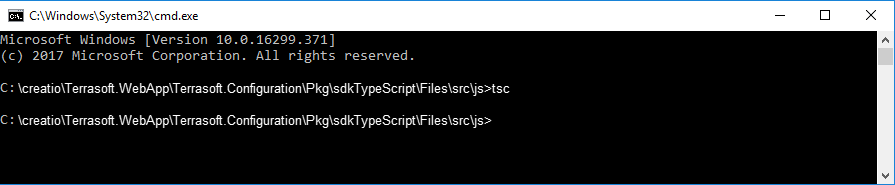
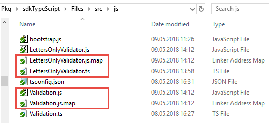
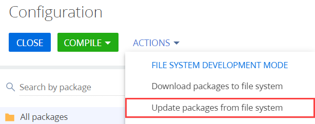
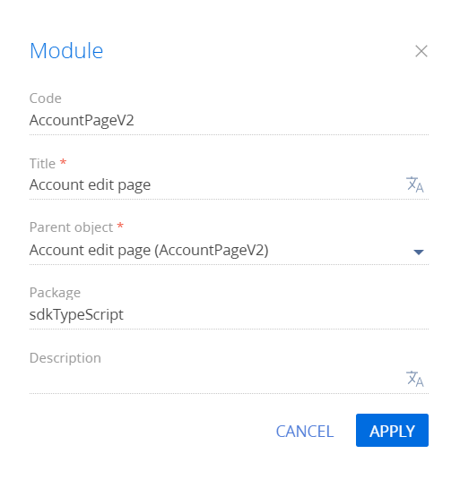

При разработке клиентской функциональности файловый контент позволяет использовать компилируемые в JavaScript языки, например, TypeScript. Подробнее о TypeScript можно узнать на официальном сайте TypeScript.
1. Установить TypeScript
Одним из способов установки TypeScript является использование менеджера пакетов NPM для Node.js.
Чтобы установить TypeScript:
- Проверьте наличие среды выполнения Node.js в вашей операционной системе.
Скачать инсталлятор можно на сайте https://nodejs.org.
- В консоли Windows выполните команду:
2. Перейти в режим разработки в файловой системе
Чтобы настроить Creatio для работы в файловой системе:
- Включите режим разработки в файловой системе.
В файле Web.config, который находится в корневом каталоге приложения, установите значение true для атрибута enabled элемента fileDesignMode.
- Отключите получение статического клиентского контента из файловой системы.
В файле Web.config, который находится в корневом каталоге приложения, установите значение false для флага UseStaticFileContent.
Web.config - Скомпилируйте приложение.
В разделе Конфигурация (Configuration) выполните действие Компилировать все (Compile all items).
 - Предоставьте доступ IIS к каталогу конфигурации.
Чтобы приложение могло корректно работать с конфигурационным проектом, необходимо предоставить полный доступ пользователю операционной системы, от имени которого запущен пул приложений IIS, к каталогу [Путь к приложению]\Terrasoft.WebApp\Terrasoft.Configuration. Как правило, это встроенный пользователь IIS_IUSRS.

Режим разработки в файловой системе описан в статье Внешние IDE.
3. Создать структуру хранения файлового контента
Чтобы создать структуру хранения файлового контента:
- В пользовательском пакете, выгруженном в файловую систему, создайте каталог Files.
- В каталоге Files создайте вложенный каталог src.
- В каталоге src создайте вложенный каталог js.
- В каталоге Files создайте файл descriptor.json.
- В каталоге Files\src\js создайте файл bootstrap.js.
4. Реализовать валидацию на языке TypeScript
Чтобы реализовать валидацию на языке TypeScript:
- В каталоге Files\src\js создайте файл Validation.ts, в котором объявите интерфейс StringValidator.
- В каталоге Files\src\js создайте файл LettersOnlyValidator.ts. Объявите в нем класс LettersOnlyValidator, реализующий интерфейс StringValidator.
5. Выполнить компиляцию исходных кодов TypeScript в исходные коды JavaScript
Чтобы выполнить компиляцию исходных кодов TypeScript в исходные коды JavaScript:
- Для настройки компиляции добавьте в каталог Files\src\js конфигурационный файл tsconfig.json.
- В консоли Windows перейдите в каталог Files\src\js и выполните команду tsc.

В результате выполнения компиляции в каталоге Files\src\js будут созданы JavaScript-версии файлов Validation.ts и LettersOnlyValidator.ts, а также *.map-файлы, облегчающие отладку в браузере.
Содержимое файла LettersOnlyValidator.js, который будет использоваться в Creatio, получено автоматически.
6. Выполнить генерацию вспомогательных файлов
Чтобы выполнить генерацию вспомогательных файлов _FileContentBootstraps.js и FileContentDescriptors.js:
- Перейдите в раздел Конфигурация (Configuration).
- Выполните загрузку пакетов из файловой системы (действие Обновить пакеты из файловой системы (Update packages from file system)).

- Для применения изменений в файле bootstrap.js выполните компиляцию приложения (действие Компилировать все (Compile all items)).
7. Проверить результат выполнения примера
Чтобы использовать валидацию:
- Перейдите в раздел Конфигурация (Configuration).
- Выполните загрузку пакетов из файловой системы (действие Обновить пакеты из файловой системы (Update packages from file system)).
- Cоздайте схему замещающей модели представления страницы контрагента.

- Выполните выгрузку пакетов в файловую систему (действие Выгрузить пакеты в файловую систему (Download packages to file system)).
- В файловой системе измените файл ..\sdkTypeScript\Schemas\AccountPageV2\AccountPageV2.js.
- Cохраните файл с исходным кодом схемы и обновите страницу контрагента.
При сохранении записи будет выполняться валидация и отображаться соответствующее сообщение.